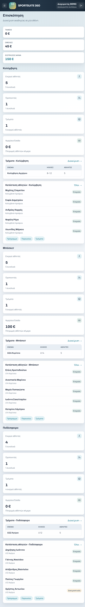
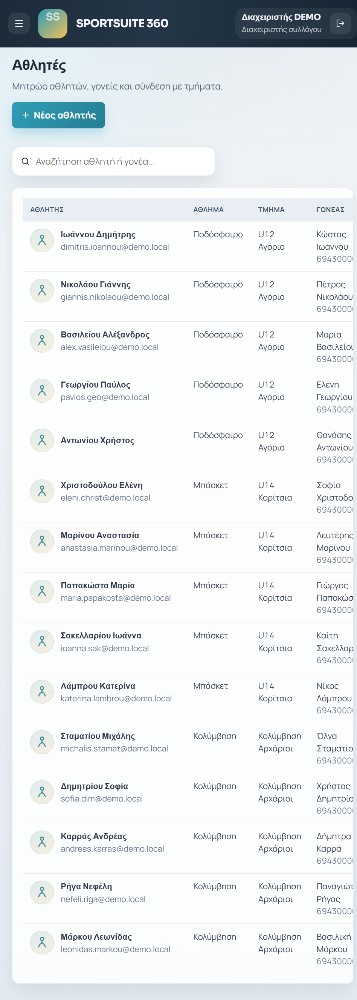
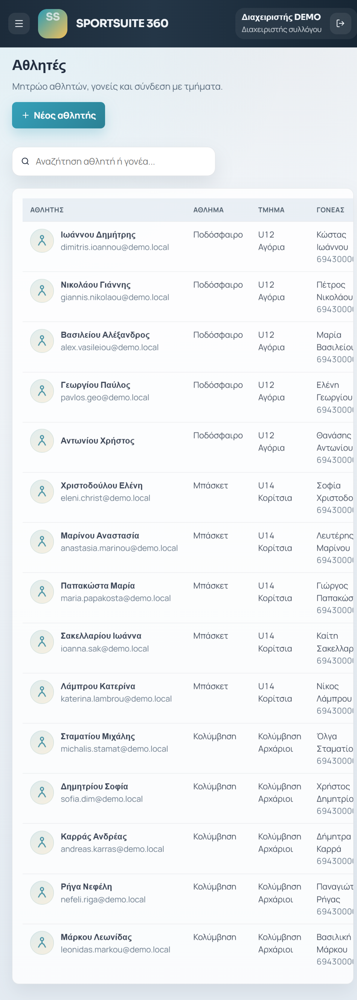
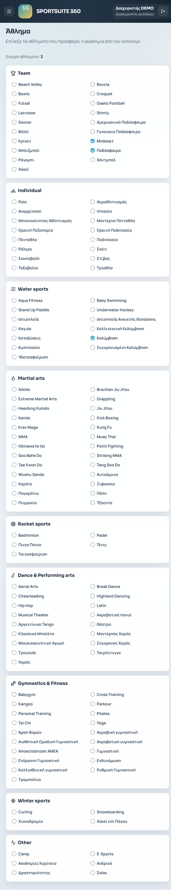
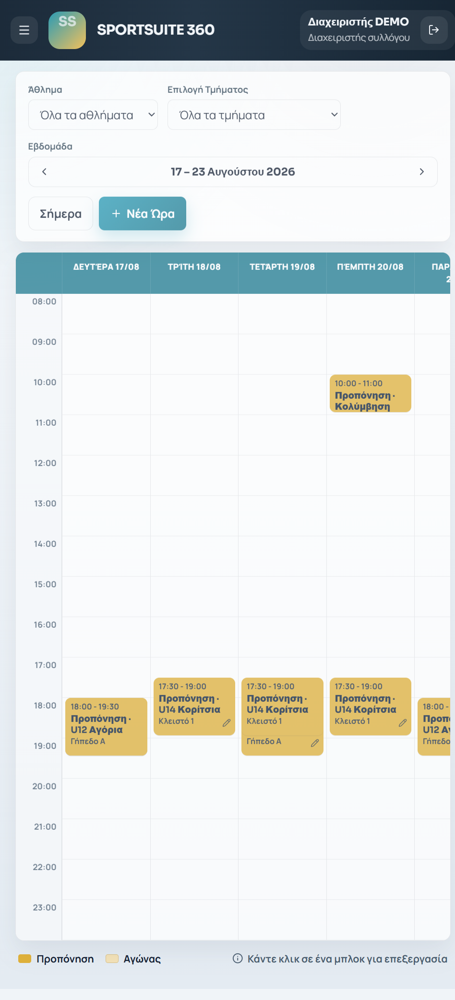
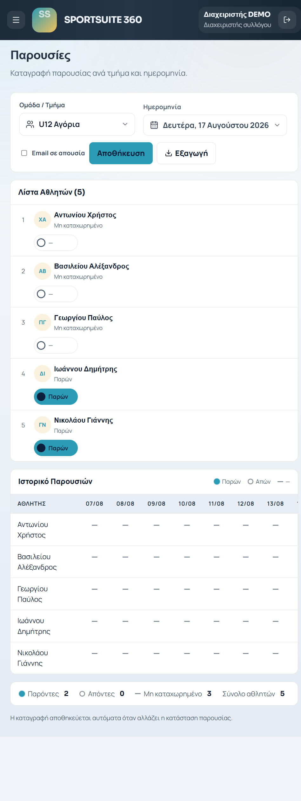
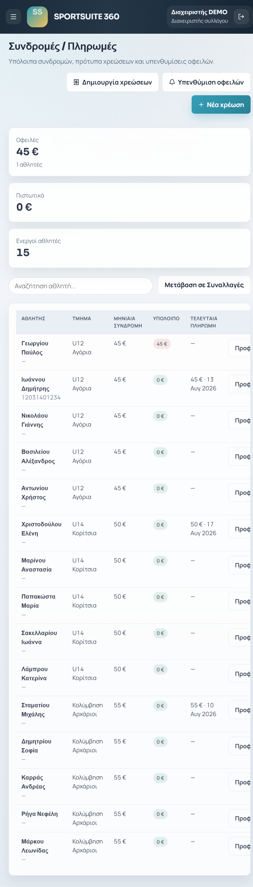
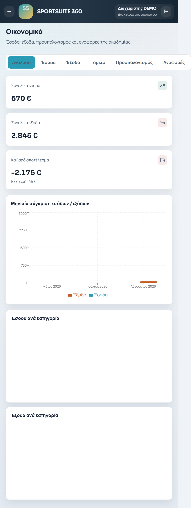

Πρακτικός οδηγός για την καθημερινή διαχείριση αθλητικής ακαδημίας, των αθλητών, των τμημάτων, του προγράμματος και των οικονομικών.
Έκδοση: Demo / 17 Αυγούστου 2026
Περιβάλλον: SportSuite 360 · Demo σύλλογος: DEMO, Αθήνα
Οι εικόνες του οδηγού προέρχονται από την πραγματική demo εφαρμογή.
Περιεχόμενα
Τι είναι το SportSuite 360
Σύνδεση και ασφάλεια
Ρόλοι και δικαιώματα
Επισκόπηση και καθημερινή πλοήγηση
Αθλητές και προφίλ
Αθλήματα, τμήματα και προπονητές
Πρόγραμμα, προπονήσεις και αγώνες
Παρουσίες
Συνδρομές, πληρωμές και οικονομικά
Ανακοινώσεις, φωτογραφίες και αποθήκη
Εκτυπώσεις, ρυθμίσεις και backup
Προτεινόμενες καθημερινές ροές
Γρήγορη αντιμετώπιση προβλημάτων
1. Τι είναι το SportSuite 360
Το SportSuite 360 συγκεντρώνει σε ένα περιβάλλον τις λειτουργίες μιας αθλητικής ακαδημίας: μητρώο αθλητών, γονείς, τμήματα, προπονητές, πρόγραμμα, παρουσίες, αγώνες, συνδρομές, εισπράξεις, έξοδα, αναφορές και επικοινωνία.
Βασική αρχή: ξεκινήστε από το προφίλ του αθλητή και συνδέστε τον με άθλημα, τμήμα, γονέα και οικονομικές υποχρεώσεις. Έτσι τα στοιχεία επαναχρησιμοποιούνται αυτόματα στις υπόλοιπες οθόνες.
Κύρια μενού
Η πλαϊνή πλοήγηση οδηγεί σε Επισκόπηση, Αθλητές, Τμήματα, Προπονητές, Πρόγραμμα, Ημερολόγιο, Παρουσίες, Συνδρομές, Οικονομικά, Ανακοινώσεις, Φωτογραφίες, Εκτυπώσεις, Αποθήκη και Ρυθμίσεις. Η ορατότητα εξαρτάται από τον ρόλο και τα ενεργά modules του συλλόγου.

Εικόνα 1. Η Επισκόπηση συγκεντρώνει βασικούς δείκτες και γρήγορες συνδέσεις ανά άθλημα.
2. Σύνδεση και ασφάλεια
Ανοίξτε την εφαρμογή και επιλέξτε Σύνδεση.
Πληκτρολογήστε email και κωδικό πρόσβασης.
Για δοκιμή, χρησιμοποιήστε Είσοδος DEMO παρουσίασης.
Ενεργοποιήστε το «Να με θυμάσαι» μόνο σε προσωπική, ασφαλή συσκευή.
Αποσυνδεθείτε από το εικονίδιο εξόδου όταν ολοκληρώσετε.
Προσωπικά δεδομένα: στοιχεία υγείας, ΑΜΚΑ, τηλέφωνα και οικονομικές πληροφορίες εμφανίζονται μόνο στους ρόλους που έχουν σχετική πρόσβαση. Μην κοινοποιείτε screenshots με πραγματικά προσωπικά δεδομένα.
Όταν ένα κουμπί ή module δεν εμφανίζεται, ελέγξτε πρώτα τον ρόλο, τα permissions και τα ενεργά modules του συλλόγου.
4. Επισκόπηση και πλοήγηση
Η Επισκόπηση δείχνει συνολικά ταμείο, οφειλές, εισπράξεις, ενεργούς αθλητές, προπονητές, τμήματα και ημερήσιες εισπράξεις ανά άθλημα. Τα links «Διαχείριση», «Πρόγραμμα», «Παρουσίες» και «Τμήματα» οδηγούν κατευθείαν στη σχετική εργασία.
Για γρήγορο έλεγχο: ανοίξτε την Επισκόπηση στην αρχή της ημέρας, ελέγξτε τις οφειλές και τις σημερινές προπονήσεις, και μετά μεταβείτε στις Παρουσίες.

Εικόνα 2. Το μητρώο αθλητών διαθέτει αναζήτηση, άθλημα, τμήμα, γονέα και κατάσταση.
5. Αθλητές και προφίλ
Νέος αθλητής
Ανοίξτε Αθλητές και επιλέξτε Νέος αθλητής.
Συμπληρώστε ονοματεπώνυμο, email, τηλέφωνο, ημερομηνία γέννησης και άθλημα.
Προσθέστε γονέα/κηδεμόνα και συνδέστε τον αθλητή με ένα ή περισσότερα τμήματα.
Αποθηκεύστε και ανοίξτε το προφίλ για τις υπόλοιπες ενότητες.
Τι περιλαμβάνει το προφίλ
Βασικά στοιχεία και στοιχεία επικοινωνίας.
Άθλημα, τμήμα και προπονητή.
Στοιχεία γονέα/κηδεμόνα.
Υγεία, ιατρική κατάσταση, ΑΜΚΑ και κάρτα υγείας, ανά permission.
Παρουσίες και ιστορικό.
Συνδρομές, χρεώσεις και πληρωμές.
GDPR συγκαταθέσεις και σημειώσεις.
Αναζήτηση: χρησιμοποιήστε ονοματεπώνυμο ή γονέα από το πεδίο αναζήτησης. Για γρήγορη αλλαγή, ανοίξτε το προφίλ από το όνομα του αθλητή.

Εικόνα 3. Το προφίλ συγκεντρώνει τις πληροφορίες και τις εργασίες που αφορούν έναν αθλητή.
6. Αθλήματα, τμήματα και προπονητές
Αθλήματα
Από τις Ρυθμίσεις → Άθλημα ενεργοποιείτε αθλήματα από τον κατάλογο ή δημιουργείτε custom άθλημα. Για custom άθλημα επιλέξτε όνομα, κατηγορία όπως team ή individual και κατάσταση. Η δημιουργία νέου αθλήματος επιτρέπεται μόνο στον Platform Admin.
Τμήματα
Ανοίξτε Τμήματα και δημιουργήστε τμήμα.
Ορίστε άθλημα, ονομασία/ηλικιακή κατηγορία, προπονητή και χωρητικότητα.
Συνδέστε αθλητές και ελέγξτε τη λίστα μελών.
Χρησιμοποιήστε τις συντομεύσεις για πρόγραμμα και παρουσίες.
Προπονητές
Καταχωρίστε στοιχεία προπονητή, αθλήματα και τμήματα ευθύνης. Ο ρόλος Coach θα βλέπει το περιορισμένο, σχετικό workspace του.

Εικόνα 4. Ο κατάλογος αθλημάτων και οι ενεργές επιλογές του συλλόγου.
7. Πρόγραμμα, προπονήσεις και αγώνες
Το Πρόγραμμα ορίζει επαναλαμβανόμενες ημέρες/ώρες, εγκαταστάσεις και τμήματα. Το Ημερολόγιο ενοποιεί προπονήσεις, αγώνες και δραστηριότητες.
Στους Αγώνες καταχωρίστε αντίπαλο, ημερομηνία, χώρο και κατάσταση. Μετά τον αγώνα συμπληρώστε αποτέλεσμα και σκορ όπου απαιτείται.

Εικόνα 5. Το πρόγραμμα παρουσιάζει τις δραστηριότητες και τις ώρες ανά ημέρα.
8. Παρουσίες
Ανοίξτε Παρουσίες.
Επιλέξτε τμήμα και ημερομηνία.
Σημειώστε παρών, απών ή δοκιμαστικό για κάθε αθλητή.
Προσθέστε σημείωση όπου χρειάζεται, π.χ. καθυστερημένη άφιξη ή τραυματισμός.
Αποθηκεύστε πριν αλλάξετε ημερομηνία ή τμήμα.
Καλή πρακτική: ενημερώνετε τις παρουσίες αμέσως μετά την προπόνηση. Έτσι ενημερώνονται σωστά οι αναφορές, το ιστορικό αθλητή και η εικόνα του προπονητή.

Εικόνα 6. Καταχώριση παρουσιών ανά τμήμα και ημερομηνία.
9. Συνδρομές, πληρωμές και οικονομικά
Συνδρομές
Στις Συνδρομές βλέπετε εκκρεμείς και εξοφλημένες χρεώσεις, δημιουργείτε χρέωση, καταχωρίζετε πληρωμή και στέλνετε υπενθύμιση οφειλής.
Επιλέξτε αθλητή ή τμήμα.
Διαλέξτε πρότυπο χρέωσης ή καταχωρίστε ποσό και περίοδο.
Αποθηκεύστε τη χρέωση.
Όταν γίνει πληρωμή, καταχωρίστε τρόπο και ημερομηνία.
Οικονομικά
Η οθόνη Οικονομικά συγκρίνει έσοδα και έξοδα, δείχνει καθαρό αποτέλεσμα, ταμείο, προϋπολογισμό και αναφορές. Χρησιμοποιήστε τις καρτέλες Ανάλυση, Έσοδα, Έξοδα, Ταμεία, Προϋπολογισμός και Αναφορές.

Εικόνα 7. Η εικόνα των συνδρομών και των οφειλών.

Εικόνα 8. Ανάλυση εσόδων, εξόδων και καθαρού αποτελέσματος.
10. Ανακοινώσεις, φωτογραφίες και αποθήκη
Ανακοινώσεις
Δημιουργήστε ανακοίνωση, ορίστε κοινό/ρόλο, προτεραιότητα και περίοδο προβολής. Χρησιμοποιήστε υψηλή προτεραιότητα μόνο για πραγματικά επείγοντα μηνύματα.
Φωτογραφίες
Οργανώστε εικόνες σε συλλογές, ανεβάστε αρχεία και επιλέξτε προβολή grid ή list. Ελέγξτε τις συγκαταθέσεις πριν δημοσιεύσετε φωτογραφία αθλητή.
Αποθήκη
Καταχωρίστε προϊόντα, μεγέθη, διαθέσιμο stock και κινήσεις εξοπλισμού. Ελέγχετε τα χαμηλά αποθέματα πριν από εκδηλώσεις ή νέα περίοδο.
11. Εκτυπώσεις, ρυθμίσεις και backup
Εκτυπώσεις
Από τις Εκτυπώσεις παράγετε λίστες αθλητών, παρουσιολόγια, υπόλοιπα, οφειλέτες, εισπράξεις, ιατρικές λήξεις, πρόγραμμα και αναφορές προόδου. Επιλέξτε πρώτα φίλτρα και περίοδο και μετά την κατάλληλη αναφορά.
Ρυθμίσεις
Διαχειριστείτε στοιχεία ακαδημίας, χρήστη, λειτουργικές παραμέτρους, αθλήματα και permissions όπου επιτρέπεται από τον ρόλο σας.
Backup
Ο Platform Admin εκτελεί backup από το περιβάλλον πλατφόρμας. Κρατήστε τα αρχεία backup σε ασφαλές σημείο, μην τα ανεβάζετε δημόσια και ελέγχετε ότι δεν περιέχουν εκτεθειμένα μυστικά ή ευαίσθητα δεδομένα.
Ελέγξτε ρόλο χρήστη, permission και ενεργό module.
Δεν εμφανίζεται αθλητής σε τμήμα
Ελέγξτε άθλημα, τμήμα, κατάσταση αθλητή και ενεργή περίοδο.
Λάθος ποσό στην Επισκόπηση
Ελέγξτε αν η χρέωση είναι πληρωμένη, την περίοδο και το ταμείο.
Δεν αποθηκεύεται αλλαγή
Ελέγξτε υποχρεωτικά πεδία, δικαιώματα και επαναφορτώστε μία φορά.
Λάθος στοιχεία σε εκτύπωση
Ελέγξτε τα φίλτρα και την ημερομηνία πριν δημιουργήσετε την αναφορά.
Σημείωση υποστήριξης: καταγράψτε route, ρόλο χρήστη, βήματα που προηγήθηκαν και ακριβές μήνυμα σφάλματος. Μην αποστέλλετε κωδικούς πρόσβασης ή πλήρη προσωπικά δεδομένα.